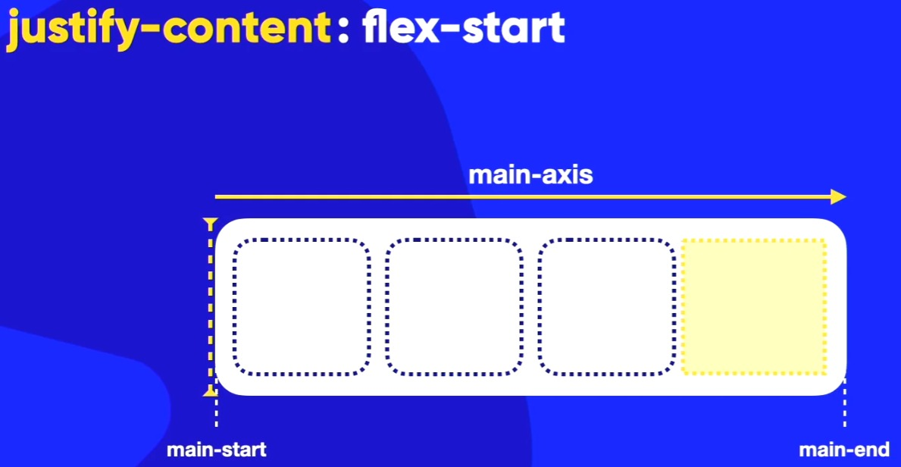
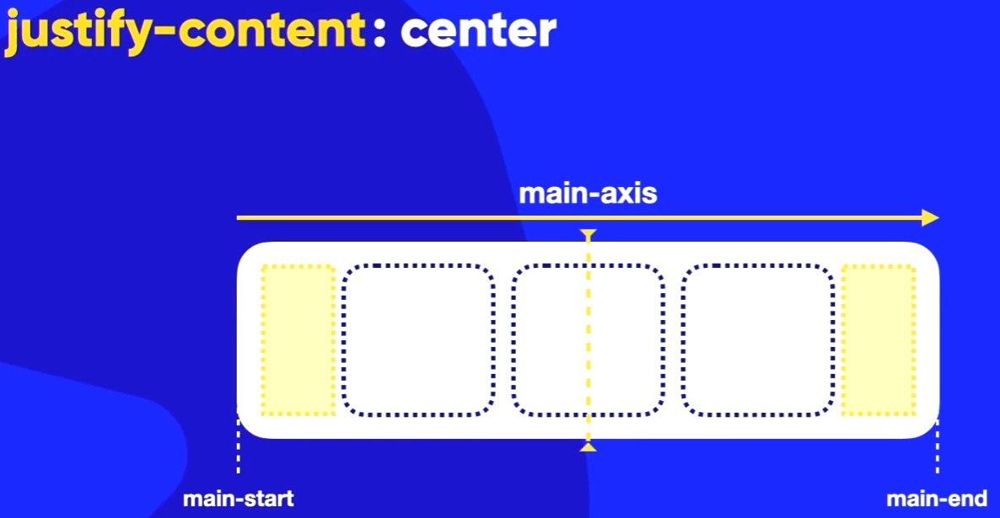
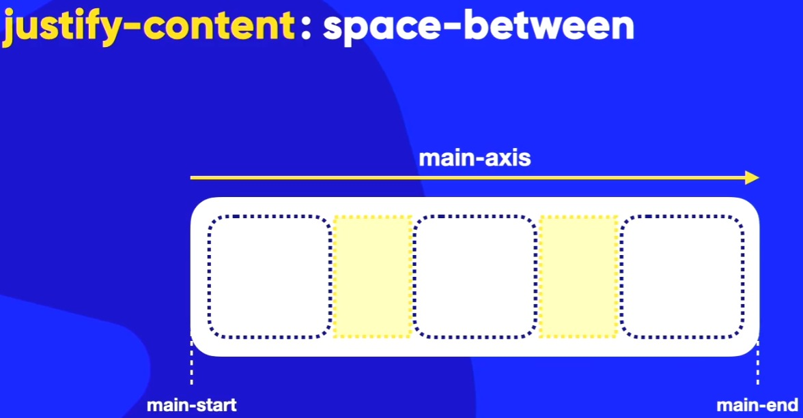
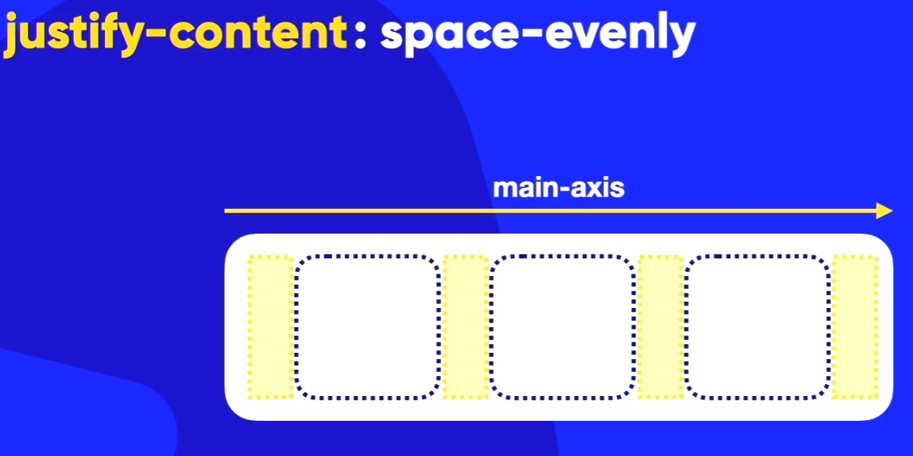
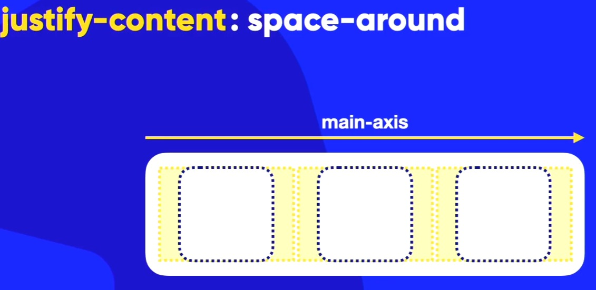
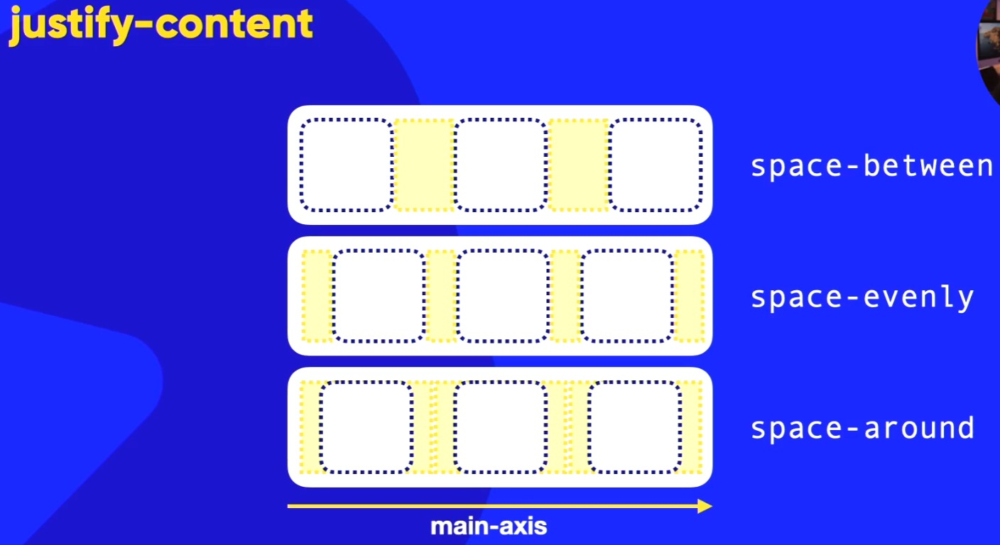
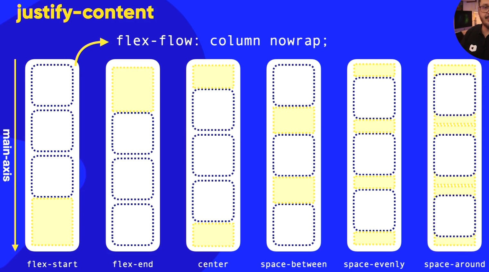

Ao usar a propriedade JUSTIFY-CONTENT:, ele vai alinhar os itens do eixo principal (MAIN AXIS) no meio do container flexível!
Lembrando que dependendo do eixo(reverse ou row/column), o alinhamento pode ser horizontal ou vertical!
Vamos falar agora sobre os VALORES do Justify Content:
Ao usar a propriedade justify-content: flex-start;, vai fazer com que o primeiro item fique grudado no ínicio do MAIN AXIS (eixo principal) que nós aprendemos sobre e o seu nome é MAIN-START
do container flexível. Lembre-se que tem o MAIN-START e o MAIN-END.
Ou seja, se o eixo for ROW (o padrão), o alinhamento será na horizontal, e se for COLUMN, o alinhamento será na vertical!
Ao usar a propriedade justify-content: flex-start, vai fazer com que o espaço livre (pintado de amarelo na imagem abaixo), seja jogado pro final do container flexível. Ou seja, pro MAIN-END. Eis o exemplo abaixo: ↓

É a mesma coisa que o justify-content: flex-start mas ao contrário! Ou seja, o primeiro item vai ficar grudado no final do MAIN AXIS (MAIN-END) do container flexível e o espaço livre (pintado de amaarelo na imagem acima), será jogado para o início do container flexível.
Como você já pode imaginar, ele vai pegar os itens e coloca-los no meio do MAIN AXIS (eixo principal) do container flexível. E o espaço livre, printado de amarelo como na imagem abaixo, será dividido igualmente entreo main-start e o main-end como na imagem abaixo: ↓
Mas lembrando que dependendo do eixo (row/column ou reverse), o alinhamento pode ser horizontal ou vertical!

Quando usar essa propriedade com esse valor, ele vai grudar
o primeiro item no main-start e o último item no main-end. O restante dos itens, serão distribuídos igualmente entre o espaço deixado pelo main-start e o main-end. Como diz o nome, BETWEEN
, vai fazer com que o espaço vazio pintado de amarelo na imagem abaixo, fique entre (between) o main-start e o main-end!

Pelo nome, já da pra saber o que ele faz. Vai fazer com que o espaçamento entre os itens sejam iguais! Ou seja, o espaço vazio pintado de amarelo na imagem abaixo, será dividido igualmente entre todos os itens do container flexível. Inclusive o espaço entre o primeiro item no main-start e o último item no main-end!

Ao usar o justify-content: space-around, ele vai fazer com que o espaço vazio pintado de amarelo na imagem abaixo, seja dividido igualmente entre os itens do container flexível. Porém, o espaço entre o primeiro item e o main-start, e o último item e o main-end, será a metade do espaço entre os itens. Ou seja, o espaço entre os itens é maior do que o espaço entre o primeiro item e o main-start, e o último item e o main-end!


